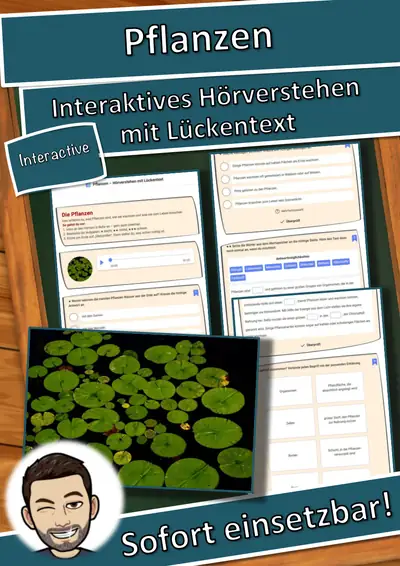

Lesespur: Der Boden – Lesespurgeschichte mit Rätseln (Klasse 5)
Begib dich mit deiner Klasse auf eine spannende Lesespur tief in den Boden! Die Kinder erkunden mit der Bodenforscherin Frida den Aufbau des Bodens – von der Streuschicht über den Humus, den Ober- und den Unterboden bis zum Gestein und zum Grundwasser tief unten. Ganz nebenbei verstehen sie, wie der fruchtbare Humus entsteht und warum der Boden für Pflanzen und Menschen so wichtig ist. Am Ende jedes Abschnitts verrät ein Hinweis den nächsten Ort (eine Bodenschicht) auf dem Boden-Plan – nur wer richtig liest und mitdenkt, findet den Weg und sammelt alle geheimen Buchstaben zum Lösungswort.
Diese Lesespurgeschichte verbindet motivierendes, sinnentnehmendes Lesen mit echtem Sachwissen über den Boden und schult zugleich das genaue Arbeiten. Das Material ist SOFORT EINSETZBAR und in DREI DIFFERENZIERUNGSSTUFEN (leicht ★ / mittel ★★ / schwer ★★★) angelegt, sodass alle Kinder einer Klasse am selben Thema arbeiten können.WICHTIG: Das komplette Material ist sowohl in FARBE als auch in SCHWARZ-WEISS enthalten – ideal zum Sparen von Druckkosten.DAS IST ENTHALTEN
- Lesespurgeschichte in 3 Niveaus (leicht, mittel, schwer)
- farbiger Boden-Plan als Suchkarte
- Hörverstehen mit QR-Code zur MP3 (Kinder hören selbstständig mit Kopfhörern)
- vier Aufträge auf dem Weg: ein Verbinde-Rätsel, ein Boden-Quiz, eine Rechenaufgabe und ein Steckbrief
- Rätselseite (Wörter-Suchsel + Wissensfragen)
- Ausmalbild zum Thema
- ausführliches Lösungsblatt für die Lehrkraft
- alles zusätzlich als komplette Schwarz-Weiß-VarianteSO FUNKTIONIERT DIE LESESPURDie Kinder lesen ab START, entnehmen dem Text einen Hinweis auf einen Ort (eine Bodenschicht), suchen ihn auf dem Plan und lesen bei dieser Station weiter. An jeder richtigen Station gibt es einen Sammelbuchstaben. Eingebaute Sackgassen (Regenwurm, Maulwurf, Käfer, Ameise) dienen der Selbstkontrolle und machen deutlich, dass diese Tiere zwar im Boden leben, aber keine Bodenschicht sind. Am Ende werden die gesammelten Buchstaben umgestellt und ergeben ein geheimes Lösungswort. (Die Lösungen sind selbstverständlich nur im Lösungsblatt für die Lehrkraft enthalten.)INHALTLICHER SCHWERPUNKTAufbau und Entstehung des Bodens: die Streuschicht aus Laub, der fruchtbare Humus aus zersetzten Pflanzenresten, der nährstoffreiche Oberboden, der steinige Unterboden, das feste Ausgangsgestein und das Grundwasser. Dazu die Bodenbildung durch Verwitterung, die Bedeutung der Bodentiere und die Wichtigkeit des Bodens für Pflanzen, Landwirtschaft und Trinkwasser. Zur Abgrenzung werden Bodentiere behandelt. Das Material stellt die Zusammenhänge sachlich und kindgerecht dar.ABGEDECKTER LEHRPLAN (Klasse 5)
- Erdkunde/Sachunterricht – Boden: Aufbau des Bodens in Schichten (Streuschicht, Humus, Oberboden, Unterboden, Gestein, Grundwasser), Entstehung von Humus, Bodenbildung durch Verwitterung, Bodentiere und die Bedeutung des Bodens.
- Deutsch – Lesen mit Texten und Medien umgehen: Lesestrategien anwenden, Texten gezielt Informationen entnehmen, sinnentnehmend und selektiv lesen; Selbstkontrolle und Lesemotivation durch die Lesespur; Zuhören: einem Sachhörtext konzentriert folgen und Wesentliches entnehmen (Hörverstehen mit MP3).
- Mathematik – Rechnen im Sachzusammenhang (Zahlen rund um Bodenschichten und Bodentiere).
- Fächerübergreifend / Kompetenzen: naturwissenschaftliches Verständnis von Naturvorgängen, Umweltbewusstsein und Bodenschutz, selbstständiges Arbeiten, genaues Lesen und Prüfen, Konzentration und Ausdauer, kreatives Gestalten (Ausmalbild).
Geeignet für Freiarbeit, Stationenlernen, Vertretungsstunden, Wochenplan und Homeschooling. Klassenstufe 5 (differenziert einsetzbar auch in angrenzenden Jahrgangsstufen).
Ähnliche Materialien

Grundwasser Lückentext mit Wortspeicher Hörverstehen und Suchsel

Gestein Lückentext mit Wortspeicher Hörverstehen und Suchsel

Ober-Ramstadt Lückentext mit Wortspeicher Hörverstehen und Suchsel

Frida Kahlo Lückentext mit Wortspeicher Hörverstehen und Suchsel

Erdbeben Lückentext mit Wortspeicher Hörverstehen und Suchsel

Pflanzen – Hörverstehen mit Lückentext (interaktiv)

Klappbuch-Werkstatt: Der Wald von oben nach unten – Sachunterricht, 3 Stufen & Kurztest (Klasse 3–5)